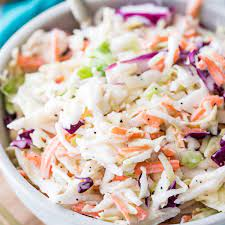

Coleslaw

Coleslaw is overall a simple yet flavorful dish. This can be paired with many dishes!
Ingredients
- 3/4 cups of mayonnaise
- 2 tablespoons of dijon mustard
- 1 tablespoon of lemon juice
- 2 tablespoons of apple cider vinegar
- 1 teaspoon of celery salt
- 2 cups of green cabbage, core removed and thinly sliced
- 2 cups of red cabbage, core removed and thinly sliced
- 3/4 cups of carrots, peeled and julienned
- 2 tablespoons of sugar
- 1/2 red onion, finely chopped
- Salt and Pepper
Directions
- Whisk together the mayonnaise, dijon mustard, lemon juice, apple cider vinegar, celery salt and sugar in a small bowl. Combine the cabbages, carrots and red onions in a large bowl.
Toss in the dressing, and fully coat the vegetables. Cover and place in the refrigerator overnight. Add salt and pepper to taste.